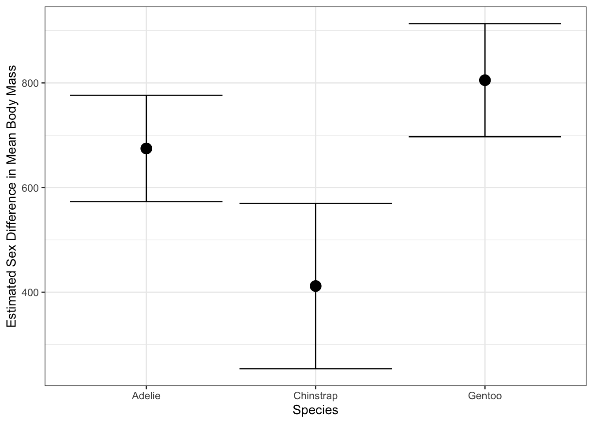
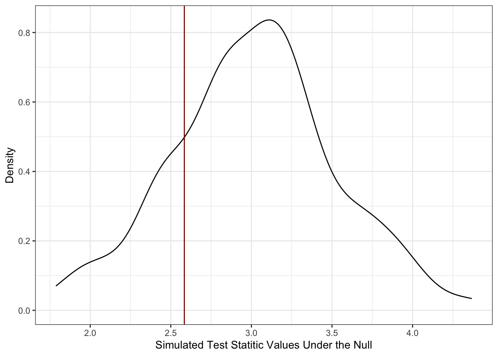
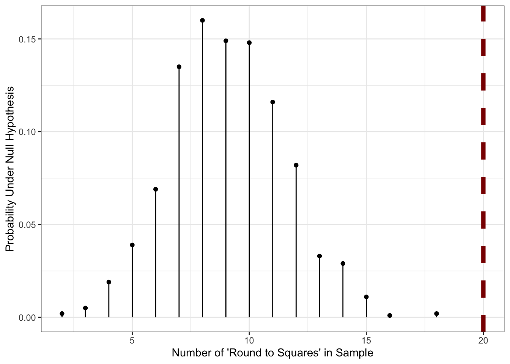
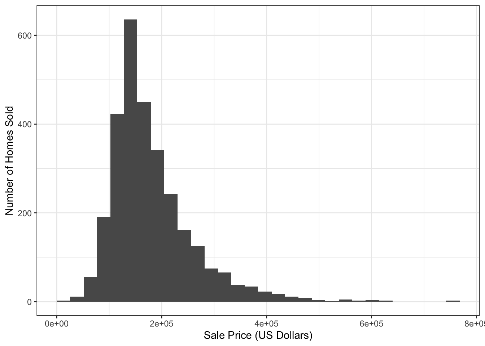
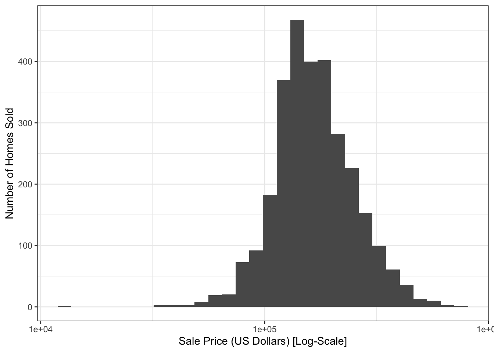

# A tibble: 3 × 2
species mean_body_mass
<fct> <dbl>
1 Adelie 3706.
2 Chinstrap 3733.
3 Gentoo 5092.STA 9750 Lecture #11 Pre-Class Assignment: Introduction to Statistical Modeling in R
Key Dates:
- Brightspace Quiz Opens: 2026-11-19 (Thursday) at 09:00pm after Lecture #10
- Tuesday Class Date (Recommended Completion Date): 2026-12-08 before Lecture #11 (Tuesday Section)
- Thursday Class Date (Recommended Completion Date): 2026-12-10 before Lecture #11 (Thursday Section)
- Brightspace Due Date: 2026-12-10 (Thursday) at 06:00pm (before Class Session #14)
- Submission: CUNY Brightspace
In our final week, we are going to look into predictive modeling (i.e., black-box machine learning) with R. Specifically, we are going to introduce the tidymodels framework in class, which provides a consistent toolkit for interacting with a wide range of modeling tools. Before we get to tidymodels, it will be useful to remember the basic modeling functionality in “basic R”.
You have hopefully seen some of this material previously in your STA 9708 or STA 9700 courses. If you haven’t, the mathematical details of what are happening here are not important for our purposes and I’d encourage you to focus on the code and user-interface instead.
Statistical Tests in R
When studying dplyr, we performed many comparisons between penguin groups: e.g.,
While we can compute the difference in averages,1 we may reasonably ask whether this difference rises to the level of statistical significance: that is, is there enough evidence to say that there is a systematic difference, or could the difference be plausibly due to getting a few extra-chunky penguins?
This type of statistical question is a deep and fundamental part of statistics, generally known as inference, and it is a topic you will cover at great length in your other courses. In this note, we simply focus on the computational steps needed to perform tests - that is, the calculations that tell us whether the evidence strongly suggests (or, more formally, is deeply inconsistent with the lack of) a difference in groups. We will implement two of the most widely used types of tests here, though many others can be implemented using the same framework.
For each of these, we will make use of the infer package, though base R equivalents are available.
- A \(t\)-test
- A proportion test
\(t\)-Test
Perhaps the most fundamental task in statistics is to ask whether two groups are systematically different: this is the world of two-sample testing. ‘Systematically different’ is a somewhat slippery term requiring more more specificity: if we interpret it to mean “having different means”, then we arrive at so-called \(t\)-tests: tests of whether two groups have different means.2
\(t\)-tests are typically performed under the assumption that each observation is normally distributed around its groups respective mean. This assumption, like most normality assumptions, is impossible to verify, but the magic of statistics is that – with enough data and conditions that aren’t too terrible3 – this is often a reasonable assumption to make. When we assume normality, the distribution of the estimated difference in means divided by the estimated standard deviation follows a \(t\)-distribution, giving this test its name.
With the infer package, this type of test is implemented with the t_test() function.4 Like most tidyverse functions, the first argument to this function is a data frame. The second argument is a formula: we haven’t done much with formulas to this point, but you might remember them from the facet_grid() function in ggplot2.
A formula is an expression with a variable name on each side separated by a ~.5 Conventionally, the variable on the left-hand side is the response and the variable on the right-hand side is the explanatory variable. In a \(t\)-test, the response is the quantity we care about, while the explanatory variable is the group identifier.6 So, for our beloved penguins, if we want to see if males weigh more than females, we would use the formula:
body_mass ~ sexHere we are asking whether the left hand side (body_mass) depends on the right hand side (sex). Using this within a t_test gives us:
Warning: The statistic is based on a difference or ratio; by default, for
difference-based statistics, the explanatory variable is subtracted in the
order "female" - "male", or divided in the order "female" / "male" for
ratio-based statistics. To specify this order yourself, supply `order =
c("female", "male")`.# A tibble: 1 × 7
statistic t_df p_value alternative estimate lower_ci upper_ci
<dbl> <dbl> <dbl> <chr> <dbl> <dbl> <dbl>
1 -8.55 324. 4.79e-16 two.sided -683. -841. -526.Note the warning message here: we are looking at the difference in groups, but we have not said which groups or in what order to compare them.7 Following the text of the warning, it is a good idea to specify the order of the comparisons:
# A tibble: 1 × 7
statistic t_df p_value alternative estimate lower_ci upper_ci
<dbl> <dbl> <dbl> <chr> <dbl> <dbl> <dbl>
1 8.55 324. 4.79e-16 two.sided 683. 526. 841.By specifing the order in this manner, we indicate that we are looking at the average male body mass minus the average female body mass. As such, most of our results are flipped in sign from what we saw before.
Let’s look at the columns of our result:
-
estimate: this is our best guess (“point estimate”) of the inter-group difference -
lower_ciandupper_ci: these are the lower and upper end points of a confidence interval for our estimate. By default, these are set at the conventional 95% level, but this can be changed by supplying theconf_levelargument. (Test yourself: if we setconf_level=0.9instead, what would happen to these two values? Why?) -
p_value: This is a \(p\)-value, indicating the strength of evidence against the null hypothesis that the averages of the two groups are equal. Smaller \(p\)-values indicate more confidence that there is a systematic difference. -
alternative: This is honestly a bit odd, but functionally, it is an indirect way of specifying the null hypothesis tested. Here, thetwo.sidedalternative, indicates that we tested a null of equality. If a directional alternative was provided (e.g.,"greater"), we would have tested against a null of “less than or equal”.8
The use of a data.frame here means that infer plays nicely with the tools we have been using all semester long. For instance, we might question whether all penguin species have an inter-sex difference: to test this, we split our data into three parts and test them separately:
# A tibble: 3 × 9
# Groups: species [3]
species data statistic t_df p_value alternative estimate lower_ci
<fct> <list> <dbl> <dbl> <dbl> <chr> <dbl> <dbl>
1 Gentoo <tibble> 14.8 117. 1.87e-28 two.sided 805. 697.
2 Adelie <tibble> 13.1 136. 6.40e-26 two.sided 675. 573.
3 Chinstrap <tibble> 5.21 62.6 2.26e- 6 two.sided 412. 254.
# ℹ 1 more variable: upper_ci <dbl>Here, we see that Gentoos, being the largest penguins in our data, exhibit the largest sex difference. This pattern can be very useful for testing sub-group differences, though you should take at least a bit of care to avoid issues with multiplicity corrections:9

This structure plays particularly nicely with ggplot2 for visualizing differences:
penguins |>
group_by(species) |>
nest() |>
mutate(test_results = map(data, t_test, body_mass ~ sex, order=c("male", "female"))) |>
unnest(test_results) |>
ggplot(aes(x=species,
y=estimate,
ymax=upper_ci,
ymin=lower_ci)) +
geom_point(size=4) +
geom_errorbar() +
xlab("Species") +
ylab("Estimated Sex Difference in Mean Body Mass") +
theme_bw()
Proportion Tests
The prop_test() function extends this paradigm to the case where the response is a binary variable. This analysis is conceptually quite similar to a \(t\)-test, but the mathematical details are based on a binomial distribution, not a normal distribution.
# A tibble: 1 × 6
statistic chisq_df p_value alternative lower_ci upper_ci
<dbl> <dbl> <dbl> <chr> <dbl> <dbl>
1 0.0113 1 0.915 two.sided -0.106 0.131Notice here that we constructed our binary variables (is_male, is_gentoo) manually. In theory, you can pass categorical variables to prop_test directly and it will binarize them for you, but I find that behavior a bit too fragile and prefer to do it by hand.
In both of these tests, we can instead perform a “one-sample” test, by not specifying an explanatory variable and instead passing NULL
No `p` argument was hypothesized, so the test will assume a null hypothesis `p
= .5`.# A tibble: 1 × 6
statistic chisq_df p_value alternative lower_ci upper_ci
<dbl> <int> <dbl> <chr> <dbl> <dbl>
1 0.0120 1 0.913 two.sided 0.450 0.559Here, as the message suggests, we are testing against a null that the population rate is 50% (equal male and female). We can specify p for other nulls:
# A tibble: 1 × 4
statistic chisq_df p_value alternative
<dbl> <int> <dbl> <chr>
1 38.6 1 5.09e-10 two.sided So (unsurprisingly), we can say with high-confidence that there are not twice as many male penguins as females in our sample.
Computational Inference
The t_test() and prop_test() functions used above are wrappers around R‘s built-in t.test() and prop.test() functions. These are classical statistical techniques, based on the normal distribution and impressive technical calculations that tell us exactly how these tests perform if the data is actually from a normal distribution. But in practice, we often don’t know whether our data is truly from a normal distribution and, while arguments around ’close enough’ are often valid, they can become quite fragile quite quickly.
In the year 2026%, we can do better but it will take us down a bit of a rabbit hole. Let’s first step back and take a 30,000 foot view of what statistical testing is really doing.10
-
We have some data \(X_1, \dots, X_n\) which we think might have come from some distribution \(\mathcal{D}\). Our choice of \(\mathcal{D}\) may be driven by all sorts of factors, but for now, it’s just what we think. We might summarize this in a technical statement like:
\[H_0: \quad X_1, \dots, X_n \buildrel \text{IID}\over\sim \mathcal{D}\]
That is, our null hypothesis (baseline or prior belief) is that our \(n\) data points are all independently sampled from the same distribution \(\mathcal{D}\).
-
We now ask ourselves whether the data really is consistent with \(H_0\). That is, do we have reason to ditch the \(H_0\) that we currently believe. We might not have a better belief, but even knowing that \(H_0\) is wrong will give us some impetus to do more work.
But how do we do this? On one side of \(H_0\) we have some data - numbers - and on the other side we have the abstract concept of a distribution. These aren’t directly comparable. To make the comparison, we need to construct some sort of test statistic, a simple numerical summary of a distribution that we can compare against.
These test statistics can be essentially anything (means, medians, minima, maxima, modes, standard deviations, quantiles, quartiles, correlations, etc.). Our only requirement is that we can compute this statistic on the distribution abstractly and that it isn’t tied to a specific finite representaion, so things like ‘number of samples’ don’t work here. (What would the ‘number of samples’ even mean for the standard normal distribution?)
Note that this simplification is a bit lossy! We’re reducing a whole distribution to a single number. There are lots of considerations here: are we picking an ‘effective’ test statistic that is likely to pick up differences or are we getting something essentially useless? Are we picking a test statistic that looks at something that we actually care about?
-
Having computed our test statistic, we now want to compare the test statistic on \(\mathcal{D}\) to the same statistic computed on our sample data \(X_1, \dots, X_n\).[^empirical] So we have reduced \(H_0\) to the weaker claim
\[H_0': T(X_1, \dots, X_n) = T(\mathcal{D})\]
where \(T(\cdot)\) is the test statistic from above. For example, while we might have originally started by asking if \(X_i\) came from a normal distribution with mean 3 and variance 4, if we use the mean as our test statistic, we’re now really testing whether the mean of our sample data matches the mean of \(\mathcal{N}(3, 2^2)\).
In a perfect world, this would be enough. If we found the two statistics differed, we would reject \(H_0'\) and hence \(H_0\). (Recall \(H_0 \implies H_0'\) so if \(H_0'\) is false, \(H_0\) must also be false.)
But sadly, we do not live in such a simple world. We know the data \(X_i\) are noisy and random[^random] and expecting exact equality is too much. We need to allow some sort of tolerance and instead look into a test something like:
\[H_0^*: T(X_1, \dots, X_n) \approx T(\mathcal{D})\]
Here, if the random quantity \(T(X_1, \dots, X_n)\) is close enough to the non-random quantity \(T(\mathcal{D})\), we don’t have strong reason to reject \(H_0\). On the other hand, if \(T(X_1, \dots, X_n)\) is very different than \(T(\mathcal{D})\), we can reject \(H_0^*\) and hence \(H_0\).
Much of the technical legwork of statistics comes down to making that idea of “close enough” precise. We clearly have a trade-off: if we require a closer equality, we’re going to reject \(H_0\) more often, including when we shouldn’t because we just got unlucky with our data, but if we are more loosey-goosey about ‘close enough’, we’ll not notice real differences.
-
We generally set the ‘close enough’ bar to control the probability of getting the wrong answer when \(H_0\) is true. That is, when \(H_0\) is true, we don’t want to get rid of it too often. We can’t never get rid of it (the only way to do so is to be completely impervious to our data), but let’s control the probability.
Specifically, we set the ‘close enough’ threshold so that, if \(H_0\) is true we only through it out with some probability that we call the level of our test. This is conventionally \(\alpha = 5\%\) though any value 0 to 100% (exclusive) is possible.
To do this, we need some sense of how wiggly \(T(X_1, \dots, X_n)\) is when \(H_0\) is true. If we see a test statistic outside that ‘range of expected variability’, we’ll reject \(H_0\). This range is historically computed mathematically, but it turns out we can do this on a computer much more easily.
Specifically, if we can create samples from \(\mathcal{D}\), we can generate lots of versions of \(X_1, \dots, X_n\) and hence lots of values of \(T\) to get a sense of the variance of \(T\).
[^random]; Even if we don’t think of the data as ‘truly’ random, everything we measure in life has a little bit of error. For example, the number of NYC residents is not random in the way we think of a coin flip as being random (or maybe it is - that’s a question for philosophers), but we’re never going to know it exactly due to paperwork problems, people not answering their phones, people moving around within the city, people constantly being born and dying, etc.
[^empirical] Maybe a bit more technically but satisfyingly, we can use \(X_1, \dots, X_n\) to build an empirical distribution \(\hat{\mathcal{D}}_n\) (think ECDF, but not necessarily just a CDF) and now we can compare the test statistic on \(\math{\mathcal{D}}_n\) with that same statistic on \(\mathcal{D}\). In this formulation, we have \(H_0': T(\hat{\mathcal{D}}_n) = T(\mathcal{D})\).
Let’s do this in practice. As above, let’s assume we have 16 samples (\(n=16\)) and we’re going to assume they come from \(\mathcal{D} = \mathcal{N}(3, 2^2)\).
Clearly, the mean of this data, roughly 2.58, is not exactly 3 but is it far enough that we should doubt ourselves?
Let’s use the computer to do some work for us. Here, we’re going to use the rnorm() function which lets us generate random samples from a normal distribution.
So that’s further away! Maybe 2.58 is good enough.
But if we want to be more certain, we have to recognize that x_simulated was also random. So let’s repeat this process many times over:
simulation <- data.frame(replicate = 1:100) |>
mutate(x_simulated = map(replicate, \(r) rnorm(n=16, mean=3, sd=2)),
x_simulated_mean = map_dbl(x_simulated, mean))Here, we’ve generated 100 different versions of our test statistic. Let’s compare this visually to the value of 2.58 we saw above:
ggplot(simulation, aes(x=x_simulated_mean)) +
geom_density() +
geom_vline(xintercept=x_mean, color="red4") +
theme_bw() +
xlab("Simulated Test Statitic Values Under the Null") +
ylab("Density")
Here, we see that our data is pretty consistent with what we would expect if \(\mathcal{D}\) were true. In particular, we see that our data, as shown through $T(X_1, , X_n) = $ 2.58 is well within the range of ‘typical values’ we got when we knew \(H_0\) is true because that’s how we simulated our data. If you want to be a bit more specific about it, we can do this with a quantile calculation:
p_above_x_bar p_below_x_bar
1 0.79 0.21so we’re very much in the middle of the data. (If one of these numbers were large and the other were small, that would imply we were towards the ends of the curve.)
Let’s compare this with what we get by doing this the ‘right’ way using t.test():
and
So basically the same (and if we did more replicates to our simulation, it would eventually be exactly the same) but with no math!11
This is quite cool! And, importantly, we do can do this simulate from a computer trick even in situations where the math is just impractical. Let’s do a crazy example.
We have 25 data points that we think might have come from a lognormal distribution with log-mean 3 and log-standard deviation 5. For inexplicable reasons, our data collection assistant lost the raw data, but remembers that 20 of the points, when rounded to the nearest whole number, were perfect squares.
Is this fact, on its own, enough to make us doubt the log-normal assumption?
is_perfect_square <- function(x) sqrt(x) == floor(sqrt(x))
data.frame(replicate = 1:1000) |>
mutate(x_simulated = map(replicate, \(r) rlnorm(n=26, meanlog=3, sdlog=5)),
x_simulated_rounded = map(x_simulated, round),
x_simulated_squares = map(x_simulated_rounded, is_perfect_square),
x_count_squares = map_int(x_simulated_squares, sum)) |>
count(x_count_squares) |>
mutate(p = n / sum(n)) |>
ggplot(aes(x=x_count_squares, y=p, )) +
geom_point() +
geom_linerange(aes(ymin=0, ymax=p)) +
geom_vline(xintercept=20, color="red4", linewidth=2, linetype=2) +
theme_bw() +
xlab("Number of 'Round to Squares' in Sample") +
ylab("Probability Under Null Hypothesis")
So in this case, the value of 20 that we saw is literally off the chart indicating that it’s very unlikely to have come about from the particular log-normal we talked about before. Sadly, due to the data loss, we can’t try to fit a better model, but we can at least build a custom statistical test based on this one bizzare piece of information we still have.
Note what happened here:
- we did a very weird calculation on the underlying data model (sample from a continuous log-normal distribution, round it to a discrete distribution, and then compute the probability of that discrete distribution giving a perfect square); and
- we computed a custom never-before-seen statistical test for that crazy data model
without doing any math! This is quite a powerful tool and, as we’ll see in class, we can sometimes even get away with not assuming quite as much about the \(H_0\) distribution.
Linear Models in R
Another important task for which R is well suited is the fitting and usage of statistical models. As noted above, we will consider this topic in detail in class, but it is worth being familiar with the basic tool for fitting linear models in R, the lm() function.
The tidymodels package includes the ames data set, which records 82 variables about 2,930 properties sold in Ames, Iowa. Clearly, predicting the sale price of these properties is of significant interest, but with so many variables of different types, this is a non-trivial modeling challenges:
library(tidyverse)
library(tidymodels)
glimpse(ames)Rows: 2,930
Columns: 74
$ MS_SubClass <fct> One_Story_1946_and_Newer_All_Styles, One_Story_1946…
$ MS_Zoning <fct> Residential_Low_Density, Residential_High_Density, …
$ Lot_Frontage <dbl> 141, 80, 81, 93, 74, 78, 41, 43, 39, 60, 75, 0, 63,…
$ Lot_Area <int> 31770, 11622, 14267, 11160, 13830, 9978, 4920, 5005…
$ Street <fct> Pave, Pave, Pave, Pave, Pave, Pave, Pave, Pave, Pav…
$ Alley <fct> No_Alley_Access, No_Alley_Access, No_Alley_Access, …
$ Lot_Shape <fct> Slightly_Irregular, Regular, Slightly_Irregular, Re…
$ Land_Contour <fct> Lvl, Lvl, Lvl, Lvl, Lvl, Lvl, Lvl, HLS, Lvl, Lvl, L…
$ Utilities <fct> AllPub, AllPub, AllPub, AllPub, AllPub, AllPub, All…
$ Lot_Config <fct> Corner, Inside, Corner, Corner, Inside, Inside, Ins…
$ Land_Slope <fct> Gtl, Gtl, Gtl, Gtl, Gtl, Gtl, Gtl, Gtl, Gtl, Gtl, G…
$ Neighborhood <fct> North_Ames, North_Ames, North_Ames, North_Ames, Gil…
$ Condition_1 <fct> Norm, Feedr, Norm, Norm, Norm, Norm, Norm, Norm, No…
$ Condition_2 <fct> Norm, Norm, Norm, Norm, Norm, Norm, Norm, Norm, Nor…
$ Bldg_Type <fct> OneFam, OneFam, OneFam, OneFam, OneFam, OneFam, Twn…
$ House_Style <fct> One_Story, One_Story, One_Story, One_Story, Two_Sto…
$ Overall_Cond <fct> Average, Above_Average, Above_Average, Average, Ave…
$ Year_Built <int> 1960, 1961, 1958, 1968, 1997, 1998, 2001, 1992, 199…
$ Year_Remod_Add <int> 1960, 1961, 1958, 1968, 1998, 1998, 2001, 1992, 199…
$ Roof_Style <fct> Hip, Gable, Hip, Hip, Gable, Gable, Gable, Gable, G…
$ Roof_Matl <fct> CompShg, CompShg, CompShg, CompShg, CompShg, CompSh…
$ Exterior_1st <fct> BrkFace, VinylSd, Wd Sdng, BrkFace, VinylSd, VinylS…
$ Exterior_2nd <fct> Plywood, VinylSd, Wd Sdng, BrkFace, VinylSd, VinylS…
$ Mas_Vnr_Type <fct> Stone, None, BrkFace, None, None, BrkFace, None, No…
$ Mas_Vnr_Area <dbl> 112, 0, 108, 0, 0, 20, 0, 0, 0, 0, 0, 0, 0, 0, 0, 6…
$ Exter_Cond <fct> Typical, Typical, Typical, Typical, Typical, Typica…
$ Foundation <fct> CBlock, CBlock, CBlock, CBlock, PConc, PConc, PConc…
$ Bsmt_Cond <fct> Good, Typical, Typical, Typical, Typical, Typical, …
$ Bsmt_Exposure <fct> Gd, No, No, No, No, No, Mn, No, No, No, No, No, No,…
$ BsmtFin_Type_1 <fct> BLQ, Rec, ALQ, ALQ, GLQ, GLQ, GLQ, ALQ, GLQ, Unf, U…
$ BsmtFin_SF_1 <dbl> 2, 6, 1, 1, 3, 3, 3, 1, 3, 7, 7, 1, 7, 3, 3, 1, 3, …
$ BsmtFin_Type_2 <fct> Unf, LwQ, Unf, Unf, Unf, Unf, Unf, Unf, Unf, Unf, U…
$ BsmtFin_SF_2 <dbl> 0, 144, 0, 0, 0, 0, 0, 0, 0, 0, 0, 0, 0, 0, 1120, 0…
$ Bsmt_Unf_SF <dbl> 441, 270, 406, 1045, 137, 324, 722, 1017, 415, 994,…
$ Total_Bsmt_SF <dbl> 1080, 882, 1329, 2110, 928, 926, 1338, 1280, 1595, …
$ Heating <fct> GasA, GasA, GasA, GasA, GasA, GasA, GasA, GasA, Gas…
$ Heating_QC <fct> Fair, Typical, Typical, Excellent, Good, Excellent,…
$ Central_Air <fct> Y, Y, Y, Y, Y, Y, Y, Y, Y, Y, Y, Y, Y, Y, Y, Y, Y, …
$ Electrical <fct> SBrkr, SBrkr, SBrkr, SBrkr, SBrkr, SBrkr, SBrkr, SB…
$ First_Flr_SF <int> 1656, 896, 1329, 2110, 928, 926, 1338, 1280, 1616, …
$ Second_Flr_SF <int> 0, 0, 0, 0, 701, 678, 0, 0, 0, 776, 892, 0, 676, 0,…
$ Gr_Liv_Area <int> 1656, 896, 1329, 2110, 1629, 1604, 1338, 1280, 1616…
$ Bsmt_Full_Bath <dbl> 1, 0, 0, 1, 0, 0, 1, 0, 1, 0, 0, 1, 0, 1, 1, 1, 0, …
$ Bsmt_Half_Bath <dbl> 0, 0, 0, 0, 0, 0, 0, 0, 0, 0, 0, 0, 0, 0, 0, 0, 0, …
$ Full_Bath <int> 1, 1, 1, 2, 2, 2, 2, 2, 2, 2, 2, 2, 2, 1, 1, 3, 2, …
$ Half_Bath <int> 0, 0, 1, 1, 1, 1, 0, 0, 0, 1, 1, 0, 1, 1, 1, 1, 0, …
$ Bedroom_AbvGr <int> 3, 2, 3, 3, 3, 3, 2, 2, 2, 3, 3, 3, 3, 2, 1, 4, 4, …
$ Kitchen_AbvGr <int> 1, 1, 1, 1, 1, 1, 1, 1, 1, 1, 1, 1, 1, 1, 1, 1, 1, …
$ TotRms_AbvGrd <int> 7, 5, 6, 8, 6, 7, 6, 5, 5, 7, 7, 6, 7, 5, 4, 12, 8,…
$ Functional <fct> Typ, Typ, Typ, Typ, Typ, Typ, Typ, Typ, Typ, Typ, T…
$ Fireplaces <int> 2, 0, 0, 2, 1, 1, 0, 0, 1, 1, 1, 0, 1, 1, 0, 1, 0, …
$ Garage_Type <fct> Attchd, Attchd, Attchd, Attchd, Attchd, Attchd, Att…
$ Garage_Finish <fct> Fin, Unf, Unf, Fin, Fin, Fin, Fin, RFn, RFn, Fin, F…
$ Garage_Cars <dbl> 2, 1, 1, 2, 2, 2, 2, 2, 2, 2, 2, 2, 2, 2, 2, 3, 2, …
$ Garage_Area <dbl> 528, 730, 312, 522, 482, 470, 582, 506, 608, 442, 4…
$ Garage_Cond <fct> Typical, Typical, Typical, Typical, Typical, Typica…
$ Paved_Drive <fct> Partial_Pavement, Paved, Paved, Paved, Paved, Paved…
$ Wood_Deck_SF <int> 210, 140, 393, 0, 212, 360, 0, 0, 237, 140, 157, 48…
$ Open_Porch_SF <int> 62, 0, 36, 0, 34, 36, 0, 82, 152, 60, 84, 21, 75, 0…
$ Enclosed_Porch <int> 0, 0, 0, 0, 0, 0, 170, 0, 0, 0, 0, 0, 0, 0, 0, 0, 0…
$ Three_season_porch <int> 0, 0, 0, 0, 0, 0, 0, 0, 0, 0, 0, 0, 0, 0, 0, 0, 0, …
$ Screen_Porch <int> 0, 120, 0, 0, 0, 0, 0, 144, 0, 0, 0, 0, 0, 0, 140, …
$ Pool_Area <int> 0, 0, 0, 0, 0, 0, 0, 0, 0, 0, 0, 0, 0, 0, 0, 0, 0, …
$ Pool_QC <fct> No_Pool, No_Pool, No_Pool, No_Pool, No_Pool, No_Poo…
$ Fence <fct> No_Fence, Minimum_Privacy, No_Fence, No_Fence, Mini…
$ Misc_Feature <fct> None, None, Gar2, None, None, None, None, None, Non…
$ Misc_Val <int> 0, 0, 12500, 0, 0, 0, 0, 0, 0, 0, 0, 500, 0, 0, 0, …
$ Mo_Sold <int> 5, 6, 6, 4, 3, 6, 4, 1, 3, 6, 4, 3, 5, 2, 6, 6, 6, …
$ Year_Sold <int> 2010, 2010, 2010, 2010, 2010, 2010, 2010, 2010, 201…
$ Sale_Type <fct> WD , WD , WD , WD , WD , WD , WD , WD , WD , WD , W…
$ Sale_Condition <fct> Normal, Normal, Normal, Normal, Normal, Normal, Nor…
$ Sale_Price <int> 215000, 105000, 172000, 244000, 189900, 195500, 213…
$ Longitude <dbl> -93.61975, -93.61976, -93.61939, -93.61732, -93.638…
$ Latitude <dbl> 42.05403, 42.05301, 42.05266, 42.05125, 42.06090, 4…As always, we start by visualizing the data:
`stat_bin()` using `bins = 30`. Pick better value `binwidth`.
A quick analysis of the response variable (Sale_Price) suggests that a log-transformation might be helpful, but we won’t worry about that in this.
(Not all methods require this, and skewness in \(y\) alone does not guarantee a transformation is needed - the skewness may actually reflect a skewness in an underlying predictor, not in the unmodeled noise response - but it at least flags it as something we may want to consider.)
ggplot(ames,
aes(x=Sale_Price)) +
geom_histogram() +
theme_bw() +
scale_x_log10() +
xlab("Sale Price (US Dollars) [Log-Scale]") +
ylab("Number of Homes Sold")`stat_bin()` using `bins = 30`. Pick better value `binwidth`.
In your regression course, you might have already seen R’s built-in support for linear models via the lm function. The lm function generally takes two arguments:
- A
formula, specifying the model to be fit - A
dataargument, specifying the data used to fit the model
For this data, a simple model might predict the sale price using the size of the slot on which the house sits:
lm(Sale_Price ~ Lot_Area, data=ames)
Call:
lm(formula = Sale_Price ~ Lot_Area, data = ames)
Coefficients:
(Intercept) Lot_Area
1.534e+05 2.702e+00 We see here several useful behaviors:
-
lmautomatically dropped unused variables - An intercept was included by default
In this formula specification, as with the tests above, the left-hand side denotes the response and anything on the right-hand side is used to specify predictors. Unlike tests, it is simple to add more features to a linear model. In fact, all we need to do is to ‘add’ them to the right hand side:
lm(Sale_Price ~ Lot_Area + First_Flr_SF + Second_Flr_SF, data=ames)
Call:
lm(formula = Sale_Price ~ Lot_Area + First_Flr_SF + Second_Flr_SF,
data = ames)
Coefficients:
(Intercept) Lot_Area First_Flr_SF Second_Flr_SF
-2.136e+04 8.578e-02 1.492e+02 8.431e+01 If we add in a categorical (factor) variable, lm is also smart enough to handle this automatically for us.12
lm(Sale_Price ~ Lot_Area + First_Flr_SF + Second_Flr_SF + Central_Air, data=ames)
Call:
lm(formula = Sale_Price ~ Lot_Area + First_Flr_SF + Second_Flr_SF +
Central_Air, data = ames)
Coefficients:
(Intercept) Lot_Area First_Flr_SF Second_Flr_SF Central_AirY
-6.004e+04 9.746e-02 1.440e+02 8.288e+01 4.835e+04 Note that, unlike the numerical features we used before, you’ll see that a new variable is created Central_AirY that is a constant offset effect of having central A/C in a home.
So the formula interface lm does quite a lot of good for us! And R provides additional functionality for working with the model after we fit it:
1 2 3 4 5
229803.8 118428.3 181022.0 293154.3 181349.9 When applied to a fitted linear model, the predict function will automatically provide predicted values (\(\hat{y}\)) for the data originally used to fit the model. These training or in-sample predictions are somewhat useful and, if we had a second data set, we could use the newdata argument to get similar ‘test set’ or ‘out-of-sample’ predictions which would provide us a more nuanced view of model accuracy.
If we want to work with this model in more detail, the broom package provides useful functionality for tidyverse-type manipulation:
# A tibble: 1 × 12
r.squared adj.r.squared sigma statistic p.value df logLik AIC BIC
<dbl> <dbl> <dbl> <dbl> <dbl> <dbl> <dbl> <dbl> <dbl>
1 0.601 0.601 50475. 1103. 0 4 -35885. 71781. 71817.
# ℹ 3 more variables: deviance <dbl>, df.residual <int>, nobs <int>Here, we see that the glance function provides the usual ‘model-level’ statistics that can be used to assess how effective the model is. Perhaps the most important ones here are the r.squared value, indicating we capture about 60% of variability with this model, and the sigma value indicating that our predictions are typically off by about $50,000.
The tidy function gives us information about specific coefficients:
tidy(ames_lm)# A tibble: 5 × 5
term estimate std.error statistic p.value
<chr> <dbl> <dbl> <dbl> <dbl>
1 (Intercept) -60041. 4451. -13.5 2.77e- 40
2 Lot_Area 0.0975 0.127 0.770 4.41e- 1
3 First_Flr_SF 144. 2.66 54.2 0
4 Second_Flr_SF 82.9 2.27 36.5 6.97e-241
5 Central_AirY 48346. 3782. 12.8 1.93e- 36Probably the most useful column here is the estimate column, which provides the estimated regression coefficients.
We will have much more to say about these types of manipulations in class.
NoteAdditional Resources
DataCamp:
-
Textbook: R4DS §10
Note that this is about exploratory analysis, not modeling per se, but the insights gained through good EDA are often essential to developing top-tier models.
Footnotes
Not the average difference as this data has no paired structure.↩︎
Other types of two sample tests ask whether the entire distribution differ, e.g., the Kolmogorov-Smirnov test and friends, whether the medians of two distributions differ, e.g., the test variously known as the Wilcoxon or the Mann-Whitney test, or tests of equal variance, e.g., Bartlett’s test. There are many statistical tests out there, but it’s not really worth learning them all as distinct ideas with unique (and historically-contingent) names. As we discuss a bit more below, understanding the general structure of hypothesis tests as sampling from a null and comparing on a single statistic is more useful for most problems in life. Statistical theorists are often concerned with coming up with the best possible test (under various technical meanings of ‘best’) but these differences are not nearly as important as understanding the logic of hypothesis testing and having the capability to develop a test that is suitable for the actual problem at hand.↩︎
You should be a bit unsatisfied with “enough” and “not too terrible”: these terms have more precise definitions, but they aren’t in our scope here. As you hopefully have learned from your other courses, the ubiquity of the normal distribution is really just the second-order Taylor expansion running roughshod over the field of statistics, so the situations that make calculus work well are also those that make statistics function robustly.↩︎
The
t_test()function is a thin wrapper around thet.test()function provided to us by baseR. Theinferversion has the nice property of returning its results in a data frame, rather than a more obscure object type, but the specific values returned are equal, so it’s fine to uset.test()instead.↩︎On most US keyboards, the
~character can be found just above thetabkey on the right hand side, and can be typed by holding downshiftand hitting the`key.↩︎You may have heard these variables referred to as the independent and dependent variables in other contexts. This terminology is absurd. In statistics, dependence is a symmetric relationship: \(Y\) depends on \(X\), then \(X\) depends on \(Y\); and if \(Y\) is independent of \(X\), then \(X\) is independent of \(Y\). Almost all of our methods are looking for some relationship between two variables, so a priori calling one of them “independent” is more than a little absurd.↩︎
If you are literally only interested in the binary question of “equal or not”, it might be ok to ignore the order since it’s just a sign flip on the difference in means, but you almost always want to look at the sign (direction) of the difference once you establish that it exists.↩︎
It’s conventional to specify the alternative instead of the null, but if you recall your introductory courses, we really only test against the null, never for the alternative so I find this to be a strange design choice.↩︎
This issue of multiple testing comes down to the fact that performing multiple tests, each of which individually has a 5% probability of error, doesn’t imply that there is only a 5% chance of making any error across the entire collection of tests. Think of something like the March Madness basketball tournament: the probability of an upset in any given game is less than 50% by definition, but with so many games, it’s crazy to expect there to be no upsets in the entire tournament.↩︎
I’m not going to cover every possible statistical test here, and I’m not being terribly technical, but I’m just trying to hit the high points.↩︎
The comparison with the “two-sided” alternative is only a bit trickier. In this case, we basically just need to take the smaller of those two values and double it, but the general construction takes a bit more work.↩︎
The specifics of mapping a categorical variable to a numerical model like linear regression are beyond what we talk about in this course, but surprisingly non-trivial. Ask your regression professor about
contrastsorencodings.↩︎